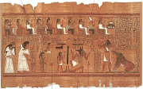

Mapa starovìkého Egypta
Tutanchamonùv sarkofág
|
EGYPT
Staèí pøeletìt Støedozemní moøe a rázem se ocitnete v Egyptì – zemi s tisíciletou tradicí. Vdy nejstarší písemné památky nalezené na jeho území pocházejí u z 4. tisíciletí pø.n.l.! Sláva této starovìké øíše trvala s krátkımi pøestávkami a do doby, kdy Egypt dobyli Arabové (641 n.l.) a pozdìji Turci (1517). Pro Evropany ale zùstával Egypt a do 19. století tajemnou zemí kdesi za moøem. O jeho „znovuobjevení" se zaslouil a slavnı vojevùdce Napoleon Bonaparte, kterı sem vtrhl se svımi vojáky v roce 1798. Kresby pyramid obletìly celı svìt a do Egypta dorazili první vìdci. Vykopávky odhalily nejen další pyramidy, ale také egyptské chrámy, pohøebištì a hlavnì spoustu nápisù a textù, které neumìl nikdo èíst. Teprve po jejich rozluštìní se ukázalo, e starovìcí Egypané byli nejen vıbornımi staviteli, ale také literáty. Psali básnì, povídky, bajky, pohádky, ivotopisy, nauènou literaturu atd. Nejvıznamnìjší jsou ale texty náboenské.
Memnónovy kolosy
|
Historie
Na bøezích africké øeky Nil vznikla jedna z nejstarších starovìkıch civilizací. Podle tradice první faraon Meni sjednotil kolem roku 3000 pø.n.l. Horní a Dolní Egypt a stal se tak vládcem obrovské øíše. Dìjiny starovìkého Egypta vìtšinou dìlíme na Starou øíši (2778-2263 pø.n.l.), Støední øíši (1991-1786 pø.n.l.) a Novou øíši (1580-1085 pø.n.l.).

Sfinga
Kdo byl Memnón?
|
Texty pyramid a rakví
Knihám mrtvıch (Nová øíše) pøedcházely jednotlivé texty rakví (Støední øíše) a texty pyramid (Stará øíše).

Dóserova pyramida v Sakkáøe

Cheopsova pyramida v Gíze
|
Posmrtnı ivot
Pro egyptské náboenství je typická víra v posmrtnı ivot. Nemùeme se tedy divit, e ústøedním bodem, ze kterého vycházela egyptská kultura, byla právì smrt. Pyramidy jsou obrovské hrobky egyptskıch panovníkù, sloitı postup mumifikace slouil k tomu, aby tìla zemøelıch vydrela co nejdéle, to ale nebylo všechno. Pohøební vıbavu zemøelého tvoøily nejen pøedmìty, které mohl po smrti potøebovat, ale také rùzná magická zaøíkadla a návody, které mu mìly usnadnit cestu podsvìtím. Ta byla toti plná nástrah a bez tzv. knih mrtvıch by duše zemøelého nikdy nedosáhla vìènosti.
Øíkadlo pro vybídnutí vešebta, aby pracoval za èlovìka v øíši duchù.
N. praví: „Ó vešebte, patøící mnì! A budu urèen a zavolán, abych konal práce, které jsou konány muem v øíši duchù podle jeho povinnosti: odklizování neèistoty, vzdìlávání pole, zavodòování bøehù, pøeváení vıchodního písku na západ, pøihlas se za mne, øka: „Zde jsem!"
Dodatek: Poslouchej jen toho, kdo tì vytvoøil, neposlouchej jeho nepøítele!
|
Znáš i jiná zaøíkadla? K èemu slouí? Fungují?
|
Vešebti
V hrobkách mizelo obrovské jmìní. Dùkazem je pohøební vıbava nepøíliš vıznamného faraona Tutanchamona. V jeho hrobce, která unikla pozornosti vykradaèù, byly nalezeny stovky zlatıch pøedmìtù. Mezi jinımi i sošky vešebtù. Vešebti byli sluhové, kteøí mìli po „oivení" speciálním zaklínadlem za mrtvého pracovat v onom svìtì. Zámoní lidé si jich mohli dovolit více, tedy tøeba na kadı den jednoho. Aby se vešebti mezi sebou nehádali, kdy má kterı pracovat, mìlo kadıch deset sošek svého nadøízeného. Ovšem i ty mìly své šéfy a navíc si musely nìkdy odpoèinout, proto poèet vešebtù neustále narùstal… Kdo nemìl vešebta ádného, musel pracovat i po smrti!
|
Kniha mrtvıch

Ilustrace z Knihy mrtvıch znázoròuje Síò obou pravd. |
Kniha mrtvıch
Bìhem vlády XXVI. dynastie (663-525 pø.n.l.) se ustálila závazná podoba tzv. Knihy mrtvıch (Kniha o zjevování se na svìtle denním). Šlo vlastnì o rozsáhlou sbírku starších zaøíkadel a rad známıch u z textù pyramid a rakví. Kniha mrtvıch se pøikládala k mumii nebo se vkládala do zvláštní schránky, byla zapsána na papyrovém svitku a obvykle bıvala bohatì ilustrována. Duše zemøelého zde vystupuje jako srdce N-ovo nebo N. Mrtvı musel projít mnoha nástrahami a pouít rùzná zaøíkadla (na oivení vešebtù, aby mìl vodu a vzduch, aby se mu otevøely správné dveøe atd.). Nakonec dorazil do sínì obou pravd, kde bùh podsvìtí Usirev (Osiris) poloil na jednu misku vah jeho srdce a na druhou peøíèko. Pokud bylo srdce lehèí (nezatíené høíchy), byl mrtvı prohlášen za spravedlivého a mohl zamíøit do obdoby køesanského ráje. V opaèném pøípadì skonèil v jakémsi pekle, kde musel jíst vıkaly a pít moè… |
|
Kniha mrtvıch |
|
Pøeèti si ukázky z Knihy mrtvıch a nakresli k nim vlastní ilustrace.
Kteøí bohové v ukázkách vystupují? Co o nich viš?
|
Vlastní ivotopis Sinuhetùv

Mika Waltari
|
Vlastní ivotopis Sinuhetùv (1950 pø.n.l.)
Sinuhet byl vıznamnı královskı úøedník a správce harému. Náhodou se doslechl o vradì faraona, na ní se podílel i harém, a pøestoe se na zavradìní panovníka nepodílel, radìji uprchl z Egypta. Dostává se a do Sırie, kde se proslaví jako vojevùdce a oení se s dcerou místního kníete. Stále ale touí po návratu do rodného Egypta, kde chce bıt podle všech pravidel pohøben. Naštìstí se novı faraon dozví o Sinuhetovıch zásluhách, a protoe byl nevinnı, mùe se vrátit zpìt do Egypta, kde se znovu stane váenım èlovìkem.
|
Jméno Sinuhet proslavil finskı spisovatel Mika Waltari (1908-1979), kterı napsal historickı román Egypan Sinuhet. S pùvodní egyptskou skladbou má však spoleèného velmi málo. Sinuhet zde není úøedník, ale lékaø a jeho dobrodruství na cestách jsou mnohem zajímavìjší. Také z hlediska historické vìrnosti se dá tomuto románu leccos vytknout, ale spisovatel není vìdec a tento skvìle napsanı román urèitì stojí za pøeètení!
Srovnej Waltariho román s egyptskım textem.
Znáš i jiná Waltariho díla?
|

Tento hieroglyf zobrazuje písaøské náèiní a zároveò oznaèuje slovo psát. |
Jazyk a písmo
Ve vıvoji egyptského písma rozlišujeme tøi hlavní fáze – hieroglyfy, hieratické a démotické písmo. Hieroglyfy (øecky „posvátná tesaná písmena“) slouily jako písmo reprezentativní, a proto zdobí zdi chrámù, sochy atd. Jejich zjednodušením vzniklo písmo hieratické (øecky „knìské“). Tím se psalo pøedevším na papyrus (pomocí štìtce). Démotické písmo (øecky „lidové“) pùvodnì slouilo hlavnì k hospodáøskım záznamùm a psalo se jím napø. na støepy z hlinìnıch nádob. Nejstarší hieroglyfickı nápis pochází z roku 3100 pø.n.l. Poslední démotickı nápis je z roku 450 n.l. a byl objeven na ostrovì Fílé nedaleko Asuánu.
Hieroglyfy ani další egyptská písma rozhodnì nebyly miniaturní ilustrace (zobrazenı pøedmìt = vıznam znaku). To by je mohl èíst kadı! Šlo o dùmyslnı systém znakù, z nich èást skuteènì znamenala to, co zobrazovala, další znaky ale oznaèovaly jednotlivé souhlásky nebo jejich skupiny, jiné gramatické tvary (napø. mnoné èíslo) a další byly pouze pomocné. Speciální znaky mìly i èíslice.
|

Bùh Thovt má hlavu ptáka ibise a v ruce drí písaøské náèiní, protoe je povaován za mytického stvoøitele hieroglyfù. Je bohem písma, tajemství a Mìsíce.
|
Rosettská deska (nalezena 1799) obsahuje stejnı text psanı tøemi druhy písma – hieroglyfy, démotickım písmem a øeckou alfabetou. Text je podìkováním knìí z Memfidy faraonovi Ptolemaiovi V. za poskytnuté dobrodiní (196 pø.n.l.). K vidìní je v Britském muzeu v Londınì.
|
Rozluštìní hieroglyfù
 Francouzskı egyptolog Jean-François Champollion [an fransoa šampoljon] publikoval v roce 1824 svou práci Nástin hieroglyfického systému starıch Egypanù, která znamenala zlom v rozluštìní egyptskıch hieroglyfù. S pomocí rosettské desky a dalších textù objevil základní zákonitosti tohoto starovìkého písma – psalo se zprava doleva, zaznamenávaly se pouze souhlásky a rozluštil hlavní znaky. Francouzskı egyptolog Jean-François Champollion [an fransoa šampoljon] publikoval v roce 1824 svou práci Nástin hieroglyfického systému starıch Egypanù, která znamenala zlom v rozluštìní egyptskıch hieroglyfù. S pomocí rosettské desky a dalších textù objevil základní zákonitosti tohoto starovìkého písma – psalo se zprava doleva, zaznamenávaly se pouze souhlásky a rozluštil hlavní znaky.
Champollion byl vynikající lingvista a uvìdomil si, e egyptská slova se podobají koptštinì. Tento jazyk pouívali hlavnì egyptští køesané, kteøí své texty zaznamenávali øeckou abecedou doplnìnou o šest démotickıch znakù. Øecká abeceda u mìla speciální znaky pro samohlásky, a proto se mùeme domıšlet, jak se egyptská slova vyslovovala. Bohuel to nebudeme moci nikdy ovìøit...
|

Champollion pøišel na to, e kartuše (ovály) oznaèují jména panovníkù. Hieroglyfy v nich tedy nezastupují celá slova, ale pouze jednotlivé hlásky. Jako první rozluštil jména faraonù Ptolemaia a Kleopatry.
Hieroglyfickı znak pro ivot – anch pouívali Egypané také jako amulet.
|

Ukázka hieroglyfického nápisu s fonetickım pøepisem a pøekladem.
Ukázky ze školních úloh písaøské školy
Zkus zapsat èást ukázky vlastním obrázkovım písmem.
Jak by vypadaly vıtrnosti nezvedenıch ákù dnes? Popiš je.

Egyptskı bùh Ré
|
Písaøi
Povolání písaøe (úøedníka) bylo velmi cenìno. Kromì knìí byli písaøi jediní gramotní lidé v Egyptì. Tìištì jejich èinnosti spoèívalo v úøedních a úèetních záznamech a opisování knih mrtvıch. Literární èinnost byla velmi okrajová. Psalo se štìtcem dvìma barvami (èernou a èervenou) na papyrové svitky ze speciálnì upraveného druhu rákosu. Nejdelší nalezenı svitek je dlouhı neuvìøitelnıch 40,5 metru! Šíøka byla asi 47 cm. Studenti se uèili napodobováním svıch uèitelù – nejdøíve opisovali školní úlohy, ani by jim rozumìli, pozdìji se uèili vıznam jednotlivıch znakù (je doloeno pøes 6000 hieroglyfù, ale písaøi staèilo ovládnout 1000 asi nejpouívanìjších znakù).
Další díla
Chvalozpìv na Nil
Nauèení* vezíra Ptahhotepa
Napomenutí egyptského mudrce
Stínosti vımluvného venkovana
Rozhovor mue s vlastní duší
Chvála mudrcù a knih
Náøek Ésety a Nebthety nad Usírem
Chvalozpìv krále Echnatona* * na Slunce
|

Vápencová socha písaøe (asi 2490 pø.n.l.) v typickém sedu

Ukázka ze školní úlohy
* ánr nauèení byl velmi oblíbenı. Vìtšinou šlo o rady otce svému synovi a nástupci v úøadu nebo na trùnì.
* * Echnaton je faraon Achnaton, kterı prosazoval boha Atona (sluneèní kotouè) jako hlavní bostvo Egypta. Po jeho smrti se ale egyptští knìí znovu vrátili k pùvodnímu polyteismu.
|
Internetové stránky
Ancient Egypt, obrázky, informace, bohové...
Art of Egypt, obrázky...
Èeská egyptologie
Egypt, cestování, památky, mytologie...
Secrets of the Pharaohs life in the ancient times, vıukovı web s animacemi
Umìní Egypta
Egypten, hieroglyfy
Exkurze
Britské muzeum, Londın
Louvre, Paøí
National Gallery of Art, New York
Faraon Achnaton s manelkou Nefertiti a dìtmi
|
Doporuèená èetba
Baines, J., Málek, J.: Svìt starého Egypta, pøel. Peèírková, Proseckı, Kniní klub, Praha 1996
Davies, W.V.: Egyptské hieroglyfy, Ètení v minulosti, pøel. H.Vlasová, Volvox globator, Praha 2002
Dávné písnì lásky, Milostná lyrika starého Egypta, pøel. Vachala, Èerník, Èeskoslovenskı spisovatel, Praha 1982
Hart, George: Egyptské mıty, pøel. I.Šmoldas, NLN, Praha 2001
Lexa, František: Beletristická literatura staroegyptská, J.Šnajdr, Kladno 1923
Lexa, F.: Náboenská literatura staroegyptská (2 díly), Praha 1997
Lexa, F.: Obecné mravní nauky staroegyptské (3 díly), Praha 1926
Lexa, F.: Vıbor ze starší literatury egyptské, Praha 1947
Lexa, F.: Vıbor z mladší literatury egyptské, Praha 1948
Lexa, F.: Staroegyptské èarodìjnictví (2 svazky), Herman & synové, Praha 1923
Vachala, Bøetislav: Moudrost starého Egypta, Kniní podnikatelskı klub, Praha 1992
Vachala, B.: Povìsti a legendy faraonského Egypta, Kniní podnikatelskı klub, Praha 1994
Verner, Miroslav a kol.: Ilustrovaná encyklopedie starého Egypta, Karolinum, Praha 1997
Waltari, Mika: Egypan Sinuhet, pøel. M.Hellmutová, Lidová demokracie, Praha 1965
Zamarovskı, Vojtìch: Bohové a králové starého Egypta, Praha 1979
Zamarovskı, V.: Jejich velièenstva pyramidy, Praha 1975
ába, Zbynìk: Tesáno do kamene, psáno na papyrus, Svoboda, Praha 1968
ába, Z., Kubíèková, V.: Zpìvy Nilu, Vıbor z lyriky starého Egypta, Praha 1957
|
Pøiprav si referát o nìkteré z uvedenıch knih nebo internetovıch stránek.
Koptské písmo vycházelo z øecké alfabety a démotického písma.
Rákosová (papyrus) houština
|
|